In this tutorial we present an example of surface-transport equations in a free-surface Navier–Stokes problem. This is a multi-domain, multi-physics problem because there is a coupling between the equations on the surface and those in the bulk. The coupling from the bulk to the surface transport arises through the surface velocity in the surface transport equation. The coupling from the surface transport to bulk arises in a more subtle manner because the surface concentration affects the surface tension. In this tutorial, we describe how to use the existing framework to create surface transport equations and how to include them in a free-surface problem.
The example problem
The problem to be solved is the evolution of an annular film of fluid on the inside of a solid cylinder in the presence of an insoluble surfactant on the interface: a modification of the classic Rayleigh–Plateau instability. For validation, we reproduce some of the results given in `A 2-D model of Rayleigh instability in capillary tubes — surfactant effects' by D. Campana, J. Di Paolo & F. A. Saita, Int. J. Multiphase Flow, vol 30 , pp 431–454, (2004). Our formulation, however, is different from their approach as described in detail in our free-surface theory document.
Solve 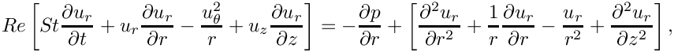 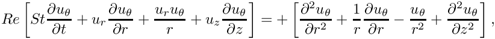
and 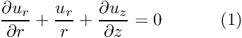 in the bulk fluid. The governing equations are subject to the no slip boundary conditions 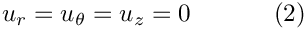 on the outer solid boundary ( 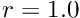) and the symmetry boundary conditions 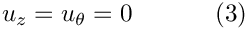 on the bottom ( 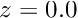) and top ( 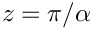) boundaries. We denote the position vector to the free surface by 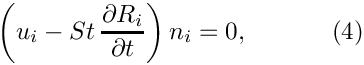 and the dynamic condition 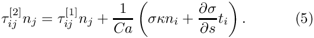 where 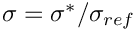 is the dimensionless surface tension relative to a reference value. An insoluble surfactant of surface concentration 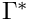 is non-dimensionalised with respect to a reference value 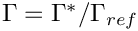 and obeys the surface transport equation 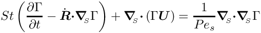 on the interface. The surface tension is a function of the surfactant concentration 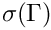 and a linear equation of state is chosen 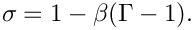 The symmetry boundary conditions on the bottom ( ) and top ( ) boundaries are
Initially, the system is at rest and 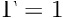. The free surface is moved into the position: 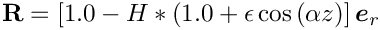 where |
![\[ Re \left[ St \frac{\partial u_z}{\partial t} + u_r \frac{\partial u_z}{\partial r} + u_z \frac{\partial u_z}{\partial z} \right] = -\frac{\partial p}{\partial z} + \left[ \frac{\partial^2 u_z}{\partial r^2} + \frac{1}{r}\frac{\partial u_z}{\partial r} + \frac{\partial^2 u_z}{\partial z^2} \right], \]](form_2.png)
 , which is subject to the kinematic condition
, which is subject to the kinematic condition ![\[ \frac{\partial \Gamma}{\partial z} = 0. \]](form_18.png)
 is a small parameter and
is a small parameter and  is the undeformed film thickness.
is the undeformed film thickness. Results
We choose parameters based on those used to compute Figures 8 and 9 in Campana et al; namely 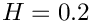, 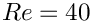,  , 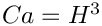, 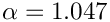, 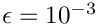, 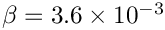 and 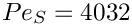. For these parameters, the system is unstable to the Rayleigh–Plateau instability and evolves towards a state in which the tube is completely occluded by the fluid at one end.
, 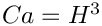, 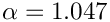, 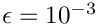, 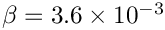 and 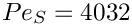. For these parameters, the system is unstable to the Rayleigh–Plateau instability and evolves towards a state in which the tube is completely occluded by the fluid at one end.
Global parameters and functions
The global parameters are simply the dimensionless parameters described above.
The driver code and problem class
The driver code and problem are very similar to those in the two-dimensional and axisymmetric interface-relaxation problems on which this driver was based. The main difference between this problem and standard free surface problems is that instead of
oomph::SpineAxisymmetricFluidInterfaceElement, we use the custom oomph::SpineAxisymmetricMarangoniSurfactantFluidInterfaceElement. The symmetry boundary conditions for the surface concentration are the natural boundary conditions of our formulation, so we "do
nothing" for the additional field at the boundaries.
An additional member function InterfaceProblem::compute_total_mass() is provided as a check on the implementation of the the surface transport equations. The surfactant cannot be removed from the surface, so its mass must be conserved. The function simply loops over the interface elements and sums their contribution to the total mass.
The SpineAxisymmetricMarangoniSurfactantFluidInterfaceElement class
This class is implemented in our driver code and inherits directly from oomph::SpineAxisymmetricFluidInterfaceElement. The class provides storage for the required additional dimensionless groups and the nodal index where the surface concentration will be stored.
Most of the functionality is already provided by the underlying FluidInterfaceElement and we need simply to overload a few functions. The constructor sets default values for the physical constants and adds the additional data value to nodes on the surface.
The function FluidInterfaceElement::sigma() is overloaded using the equation of state defined in the problem specification
The majority of the work is performed in
which provides the additional surface transport equations. In the example code two formulations of the surface transport equations are provided the one used by Campana et al in which the curvature is computed explicitly and the formulation derived in our free-surface theory, in which the curvature is not required. The version used is determined by an internal boolean
The remainder of the function adds the residuals associated with the surfactant transport equations which are described in the free-surface theory. Note that an additional term arises due to the azimuthal curvature compared to the standard one-dimensional surface.
The function fill_in_contribution_to_jacobian(...) is also overloaded to that the effect of surfactant concentration on the bulk equations is computed by finite differences. This could be modified in the future so that the appropriate derivative terms are included in add_additional_residual_contributions_interface(...).
Finally the elements contain a function
that computes the integral of the concentration over the elemental surface, representing the total mass of surfactant within the element.
Exercises
- Investigate the difference between the solutions for the two formulations of the surfactant transport equations. Which conserves mass more accurately?
- Investigate the influence of variations in
 and try to reproduce the results found by Campana et al.
and try to reproduce the results found by Campana et al. - Look at the three-dimensional (non-axisymmetric) version of the code found in the same directory. Confirm that the same results are produced. Is the instability stable to non-axisymmetric perturbations? Use the code to investigate what happens if you make the cross-sectional boundary slightly elliptical rather than circular?
Source files for this tutorial
- The source files for this tutorial are located in the directory:
demo_drivers/multi_physics/rayleigh_instability_surfactant
which contains refineable and non-refineable multi-domain versions of the Boussinesq convection problem.
- The full driver code for the problem described in this tutorial is:
demo_drivers/multi_physics/rayleigh_instability_surfactant/rayleigh_instability_insoluble_surfactant.cc
- The corresponding driver code for the non-refineable version of the problem is:
demo_drivers/multi_physics/boussinesq_convection/multi_domain_boussinesq_convection.cc
PDF file
A pdf version of this document is available.